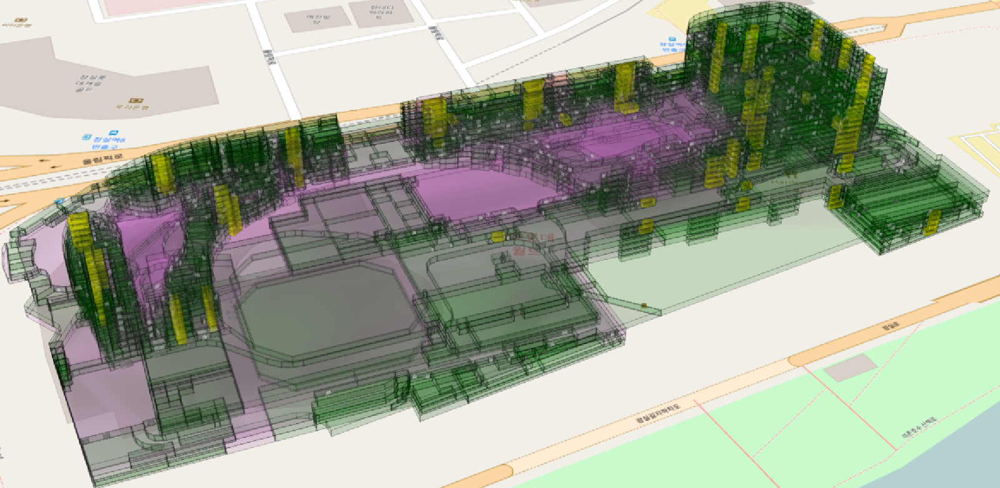
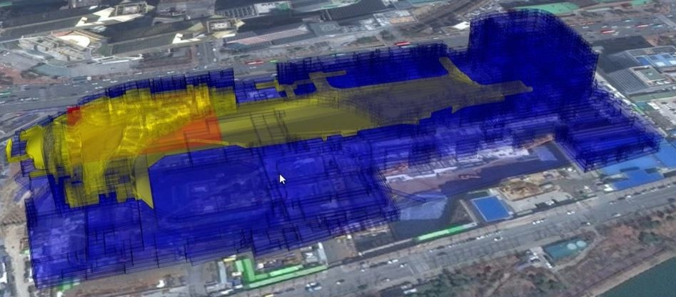
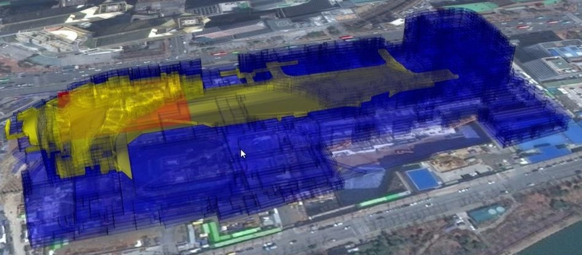

Motivation
최근 3차원 공간 데이터에 대한 관심이 높아짐에 따라 Cesium, iTowns와 NASA WorldWind 같은 3차원 공간 데이터를 다루는 오픈 소스 소프트웨어들이 활발히 개발되고 있다. 현재 개발되고 있는 3차원 공간 데이터와 관련된 대부분의 오픈 소스 소프트웨어들은 클라이언트 환경에서 3차원 공간 데이터를 시각화 하여 공간 데이터를 관찰 하거나 추적 하는 데 초점을 두고 있다. 그러나 3차원 공간 데이터를 제공하고 질의를 처리할 수 있는 오픈 소스 공간 데이터 라이브러리는 아직 개발되지 않아 오픈 소스 환경에서 3차원 공간 정보를 서비스하기 위한 충분한 환경이 제공 되고 있지 않다. 사용자에게 지리 공간 데이터를 서비스하기 위해서는 데이터를 파싱하거나 연결하고 사용자의 질의 요청을 처리하는 등의 작업이 공통적으로 필요하다. 따라서 3차원 지리 공간 데이터에 관련된 서비스를 구축하려는 사용자에게 필요한 공통적인 기능들을 제공하는 범용적이고 확장이 쉬운 라이브러리가 있다면 사용자는 많은 시간과 노력을 아낄 수 있다.
기존에 존재하는 대표적인 오픈소스 공간 데이터 라이브러리로는 GeoTools가 있다. GeoTools는 표준을 따르는 다양한 공간 데이터 소스를 제공하며 공간 데이터를 질의하는 기능들을 제공한다. 표준을 따르는 다양한 데이터 소스를 GeoJSON, Shapefile과 같은 공간 데이터 포맷을 다루는 파일 저장소나 PostGIS, Oracle Spatial과 같은 공간 데이터베이스 저장소를 이용하여 GeoTools에서 사용할 수 있으며, 새로운 저장소를 추가하기 쉽게 고안되어 있으므로 현재 지원하지 않는 데이터 소스에 대한 저장소를 GeoTools에 추가하여 사용하기 쉽다.
그러나 GeoTools는 현재 3차원 공간 데이터를 다루는 기능은 거의 지원되지 않고 있다. 예를 들어 3차원 기하인 입체 기하를 가진 공간 정보를 GeoTools를 통해 데이터 저장소에 저장하는 것은 불가능하고 반대로 저장소의 입체 기하를 가진 공간 정보를 GeoTools에 불러와 처리 하지도 못한다. 또한 Z좌표를 가진 점, 선, 면 기하를 GeoTools를 통해 데이터 저장소에 저장할 수는 있지만 공간 질의를 수행할 경우 GeoTools는 Z좌표를 고려하지 않아 3차원 공간 질의를 지원하지 못하고 있다.
GeoTools가 현재 3차원 공간 데이터를 다루지 못하고 있는 이유는 GeoTools가 공간 정보를 내부적으로 표현하고 있는 데이터 구조에서 찾을 수 있다. GeoTools는 Simple Feature Access Specification 표준 기반의 기하 객체인 JTS라이브러리를 이용하고 있다.
JTS는 GeoTools가 2차원 기하를 대상으로 수많은 기하 연산과 유용한 기능을 지원하기 위해 이용하는 중요한 모듈이다. 현재 GeoTools에서는 공간 정보를 표현하는 Feature가 가지고 있는 기하 속성은 모두 JTS 라이브러리의 기하를 가지고 있다고 가정하고 구현되어 있다.
그러나 JTS라이브러리를 계속 사용한다면, 두가지 문제로 3차원 확장 기능을 지원하기에 문제가 있다. 첫 째, JTS라이브러리는 OGC의 SFA기반의 모델을 기반으로 구현되어 있기 때문에 3차원 공간 기하인 Solid를 지원하지 않는다. 둘 째, JTS라이브러리는 Z좌표를 고려한 3차원 공간 연산을 제공하고 있지 않다. 기하가 Z좌표를 가지고 있더라도 X, Y좌표만을 이용한 공간 연산 만을 지원하고 있다.
이러한 배경에서 본 연구에서는 GeoTools가 3차원 공간 데이터를 지원할 수 있도록 기능을 확장하여 3차원 공간 데이터를 서비스하는 데 필요한 라이브러리를 구축하는 것을 목적으로 한다. GeoTools가 3차원 공간 데이터를 지원하기 위해서 다음과 같은 요구사항이 만족하도록 구현하였다.
- 3차원 기하를 저장할 수 있는 데이터 구조 지원
- 3차원 객체에 대한 질의를 처리하는 기능 지원
- 3차원 공간 정보를 저장하는 데이터 저장소의 연결을 지원
Contents
ISO 19107 공간 스키마 기반의 기하모델을 사용하는 Feature를 제공하기 위한 첫번째 단계로 ISO 19107 공간 스키마 기반의 기하 모델을 구현해야 한다. 현재 GeoTools의 OpenGIS 모듈에서 ISO 19107 공간 스키마를 인터페이스로 정의하고 있다. 또한 unsupported 모듈 중에 OpenGIS 모듈이 정의한 ISO 19107 공간 스키마 기반의 인터페이스를 구현한 모듈이 있다. 그러나 %이 모듈은 Solid 기하 타입을 구현 하지 않는다. 이 모듈 또한 JTS 라이브러리와 마찬가지로 Z좌표를 가진 두 기하에 대해 포함, 교차와 같은 3차원 공간 연산을 지원하지 않고, 각 기하에 대한 넓이나 기하 간의 거리와 같은 연산 또한 매우 일부만 구현 되어 있다. 따라서 3차원 공간 연산을 지원하는 새로운 기하 모듈을 구현하였다. 새로운 기하 모듈을 위해 기존에 존재하는 ISO 19107 공간 스키마 기반의 기하 모델이 정의된 인터페이스를 구현할 때 SFCGAL 라이브러리를 연결하여 3차원 공간 연산을 지원하도록 하였다. SFCGAL은 C++로 작성된 라이브러리이기 때문에 Java 기반의 GeoTools에서 SFCGAL의 기능을 사용하기 위해서는 자바 네이티브 인터페이스가 필요하다. Java에서 C++ 네이티브 코드를 호출하기 위한 여러가지 방법이 있다. 먼저 가장 원시적인 방법인 JNI가 있다. 그러나 라이브러리 단위의 코드를 접근하기 위해서는 커다란 노력이 필요하다. 때문에 네이티브 코드를 쉽게 연결하여 호출하는 것을 도와주는 라이브러리가 필요하다. 그 중에 하나로 %SWIG가 있다. SWIG는 여러 언어 사이의 연결을 도와주는 기능이 있지만, SWIG 만의 문법이 있고 복잡한 구조를 가지는 Interface 파일을 생성해야 한다는 단점을 가지고 있다. 또 하나의 라이브러리인 JavaCPP도 마찬가지로 Java에서 C++ 네이티브 코드로 효율적인 접근을 가능하게 해준다. SWIG와 비교하여 JavaCPP가 있다. JavaCPP는 Java에서 C++ 네이티브 코드로 효율적인 접근을 가능하게 해준다. 또한 JavaCPP는 비교적 단순하게 C++ 네이티브 코드로 접근하기 위한 Java클래스를 정의하고 일련의 빌드 과정을 거치면 자동으로 JNI 코드를 생성하여 C++ 컴파일러를 통해 네이티브 라이브러리를 생성한다. JavaCPP를 이용하여 ISO 19107기반의 기하에서 공간 연산 함수 호출 시 그림과 같은 구조로 SFCGAL Wrapper객체로부터 GeoTools에서 SFCGAL의 함수를 호출할 수 있도록 구현하였다. SFCGAL의 기하 구조는 SFA의 기하 구조와 거의 같지만 3차원 기하인 Solid를 제공하기 위해 ISO 19107 공간 스키마의 Solid 타입이 추가된 구조이다. 따라서 SFCGAL의 기하 모델과 ISO 19107 인터페이스의 기하 모델이 다르므로 GeoTools 내의 ISO 19107기반의 기하에서 SFCGAL의 함수를 호출하기 위해서는 두 기하 모델 사이의 변환 과정이 필요하다. SFCGAL Convertor 에서 ISO 19107기반의 기하와 SFCGAL 기하 간의 변환을 수행하며, 두 모델 간의 대응 관계를 표를 기반으로 정의하였다.
\begin{table[t] \label{tab:mapping between sfcgal and iso \centering \caption{SFCGAL 기하 모델과 ISO 기하 모델 사이의 매핑 관계 \begin{tabular{c|c \hline SFCGAL & ISO 19107 \\ \hline Coordinate & DirectPosition \\ Point & Point \\ LineString & Curve \\ LineString & Ring \\ Polygon & Surface \\ PolyhedralSurface & PolyhedralSurface \\ Solid & Solid \\ MultiPoint & MultiPoint \\ MultiLineString & MultiCurve \\ MultiPolygon & MultiSurface \\ GeometryCollection & MultiPrimitive \\ MultiSolid & MultiSolid \\ \hline \end{tabular \end{table 현재 구현되어 있는 라이브러리에서 3차원 공간연산 기능을 사용하기 위해서는 여러가지 빌드 과정이 필요하다. CMake, Boost, CGAL, SFCGAL과 같은 라이브러리가 빌드 되어야 한다. CMake는 멀티플랫폼에서 동작할 수 있게 Make 파일의 생성을 도와주는 오픈소스 프로젝트이다. 이를 이용해서 CGAL과 SFCGAL을 빌드한다. 이후 C++를 개발할 때 널리 쓰이는 라이브러리인 Boost을 CGAL에서 사용하기 때문에 Boost가 선행적으로 설치되어야 한다. CGAL을 빌드하고 나면 SFCGAL도 또한 CGAL을 이용하여 개발되었기 때문에 SFCGAL의 빌드를 위해서는 CGAL의 설치가 필수적이다. 이 후 Java에서 C++로 구현된 SFCGAL 함수를 호출하여 3차원 공간연산 기능을 수행하기 위해서 JavaCPP를 이용해 SFCGAL의 기능을 호출할 수 있도록 연결이 해야 비로소 기능이 동작한다. 이러한 일련의 과정들은 매우 복잡하다. 때문에 gt-geometry 모듈에 SFCGAL, CGAL, Boost를 설치해주고 JavaCPP를 이용해 SFCGAL을 GeoTools에 연결해주는 스크립트를 만들었다.
ISO 19107 공간 스키마 기반의 기하모델을 사용하는 Feature를 제공하기 위한 두번째 단계로 GeoTools에서 기하모델로 사용하던 JTS 라이브러리를 ISO 기하모델로 바꾸어야 한다. 이에 따라 기하를 저장하는 Feature 의 구현도 달라진다. Feature 와 FeatureType 은 각각 그림와 같은 구조로 디자인되어 있다. Property 는 Association 과 Attribute 로 나뉜다. Property 와 Attribute 는 하나의 값을 가지는 반면 ComplexAttribute 는 Property 모음을 가진다. 따라서 ComplexAttribute 를 상속하는 Feature 도 여러 개의 Property 를 가질 수 있다. 지도에 그릴 수 있는 공간 객체를 표현하는 Feature 는 기하 정보도 저장하고 있어야 한다. 이를 다루기 위해 기하 정보를 기하 속성이라는 개념으로 추상화하여 정의하고 있다. Feature 는 여러 개의 Property 중 GeometryAttribute를 가지고 있음으로써 공간 객체의 기하 정보를 가진다. 이 때 GeometryAttribute 인터페이스는 자바에서 구현된 실제 기하 타입을 가지고 있어야 하는데 지금의 GeoTools는 GeometryAttribute의 실제 기하 타입이 모두 JTS 라이브러리의 기하 타입으로 가정하고 있다. %거의 모든 GeoTools의 모듈에서 이 Feature를 사용하여 기능을 구현할 때 그 Feature가 저장하고 있는 기하는 JTS를 이용한다고 가정하고 구현이 되어 있으므로 이러한 부분을 ISO 기하모델의 기하객체를 이용하여 동작하도록 바꾸어 구현하는 것이 필요하다. 따라서 ISO 기하모델을 저장하는 새로운 Feature를 만들고 이를 지원하는 여러가지 유틸리티 기능들을 구현하였다. ISO 19107 공간 스키마 기반의 기하모델을 사용하는 Feature를 제공하기 위한 세번째 단계로 두 Builder 클래스를 새로운 Feature에 맞게 기능을 바꾸어야한다. 먼저 타입을 만드는 SimpleFeatureTypeBuilder에서 그 속성의 타입과 대응되는 자바의 클래스가 JTS 라이브러리에서 제공하는 기하 클래스를 상속받을 경우 GeometryType으로 정의하는데, 그 대신 ISO 기하모델에서 정의된 기하 클래스를 상속받을 때 GeometryType을 만들어내도록 재구현하였다. 그에 따라 Feature에서 기하정보를 저장할 때 JTS 기하 객체가 아닌 ISO 기하 객체를 가지도록 GeometryAttribute를 수정하고 SimpleFeatureBuilder를 구현하였다. GeoTools에서는 데이터 저장소를 지원하는 기능을 DataStore라는 레이어에서 제공한다. Data- Store는 GeoTools에서 데이터 소스 레이어와 장에서 설명한 Featrue 레이어 간의 미들 웨어와 같은 기능을 담당한다. 즉 DataStore는 공간 정보를 나타내는 Feature를 각 데이터 저장소의 형식에 맞게 저장하거나 반대로 데이터 저장소에 저장된 공간 정보를 GeoTools의 Feature로 만들어 가져오는 기능을 담당한다. 이 때, 사용자는 원하는 공간 질의를 수행한 뒤 Feature로 결과를 만들어 낼 수 있는데, GeoTools에서는 질의 조건을 OGC Filter Encoding Specification 을 기반으로 정의하고 있다. GeoTools의 DataStore는 필터 정보를 이용하여 질의를 처리한다. 이 때 포함, 교차와 같은 공간 필터는 기하 연산 라이브러리 또는 공간 데이터베이스에서 처리하도록 구현 된다. 파일 저장소의 경우에 저장소 내에서 질의를 처리할 수 없기 때문에 GeoTools내 기하 연산 라이브러리를 사용하게 된다. 본 연구에서는 3차원 연산을 포함한 공간 필터를 처리하기 위해 GeoTools에 연결한 SFCGAL 라이브러리를 이용하여 저장소에서 모든 데이터를 가져온 후 조건에 맞는 데이터를 추출 하였다. 데이터베이스 저장소의 경우에는 공간 데이터베이스에서 지원하는 공간 함수를 적용한 후 GeoTools로 결과를 가져오는 것이 효과적이다. 하지만 3차원 공간 연산의 경우 데이터베이스에서 제공하지 않거나 부분적으로만 제공하는 경우가 많기 때문에 데이터베이스에서 질의 조건을 처리하지 못할 경우가 발생할 수 있다. 이러한 경우에는 그림 처럼 저장소로부터 대상 데이터들을 로드 한 후 파일 저장소와 같은 방법으로 SFCGAL 라이브러리를 이용하여 질의를 처리해야 한다.
범용적인 3차원 공간 정보 데이터 라이브러리를 지원하기 위해서는 3차원 공간 정보를 저장할 수 있는 다양한 데이터 저장소를 제공할 수 있어야 한다. GeoTools에서는 그림과 같은 구조로 데이터 저장소를 크게 파일 저장소와 데이터베이스 저장소로 나누어 구현한다. 파일 저장소로 제공하고 있는 포맷으로는 Shapefile, GeoJSON 등이 있고 데이터 베이스 저장소로는 PostGIS, Oracle, MySQL과 같은 다양한 데이터 베이스가 있다.
 이 장에서는 비교적 간단한 구조를 가지고 있는 공간 파일 포맷인 GeoJSON과 널리 사용되고 있는 오픈소스 공간 데이터 베이스인 PostGIS를 대상으로 GeoTools의 3차원 데이터 저장소로 구현하는 것을 설명한다. GeoTools에서는 각 구체적인 저장소를 필요한 인터페이스를 저장소에 맞게 구현함으로써 플러그인으로 확장할 수 있다.
\begin{table[t]
\centering
\caption{Simple Feature Access 와 ISO 기하 사이의 매핑 관계
\label{tab:mapping
\begin{tabular{c|c
\hline
Simple Feature Access & ISO 19107 \\
\hline
Coordinate & DirectPosition \\
Point & Point \\
LineString & Curve \\
LinearRing & Ring \\
Polygon & Surface \\
PolyhedralSurface & PolyhedralSurface \\
MultiPoint & MultiPoint \\
MultiLineString & MultiCurve \\
MultiPolygon & MultiSurface \\
GeometryCollection & MultiPrimitive \\
& Solid \\
\hline
\end{tabular
\end{table
이 장에서는 비교적 간단한 구조를 가지고 있는 공간 파일 포맷인 GeoJSON과 널리 사용되고 있는 오픈소스 공간 데이터 베이스인 PostGIS를 대상으로 GeoTools의 3차원 데이터 저장소로 구현하는 것을 설명한다. GeoTools에서는 각 구체적인 저장소를 필요한 인터페이스를 저장소에 맞게 구현함으로써 플러그인으로 확장할 수 있다.
\begin{table[t]
\centering
\caption{Simple Feature Access 와 ISO 기하 사이의 매핑 관계
\label{tab:mapping
\begin{tabular{c|c
\hline
Simple Feature Access & ISO 19107 \\
\hline
Coordinate & DirectPosition \\
Point & Point \\
LineString & Curve \\
LinearRing & Ring \\
Polygon & Surface \\
PolyhedralSurface & PolyhedralSurface \\
MultiPoint & MultiPoint \\
MultiLineString & MultiCurve \\
MultiPolygon & MultiSurface \\
GeometryCollection & MultiPrimitive \\
& Solid \\
\hline
\end{tabular
\end{table
PostGIS와 같은 데이터베이스 저장소의 경우에는 다양한 데이터베이스에서 공통적으로 필요한 기능들은 JDBC 모듈에 구현되어 있고 각 데이터베이스마다 다르게 사용하는 공간 타입의 이름이나 함수의 경우 JDBC 모듈의 인터페이스를 확장하여 구현하도록 정의되어 있다. 데이터베이스 저장소를 추가하기 위해서 필수적으로 구현하여야 할 인터페이스는 표 \ref{tab:databaseinterface과 같다. \begin{table[t] \centering \caption{데이터베이스 저장소의 인터페이스 \label{tab:databaseinterface \begin{tabular{c|c \hline 인터페이스 이름 & 인터페이스 설명 \\ \hline \thead{FilterToSQL & \thead{Filter를 SQL의 WHERE절로 인코딩한다. \\ \hline \thead{Dialect & \thead{JDBCDataStore가 데이터베이스와 직접 소통하기 위해 \\ 사용하는 드라이버로써 주로 자바 타입과 SQL타입의 매핑, \\ 기하 타입과 SQL기하 타입의 매핑을 수행한다. \\ \hline \thead{DataStoreFactory & \thead{데이터베이스와의 연결 및 연결을 위해 필요한 파라미터를 정의한다. \\ \hline \thead{JNDIDataStoreFactory & \thead{JDBC DataStore를 위해 JNDI 연결을 얻는다. \\ \hline \end{tabular \end{table 또한 데이터베이스 저장소의 경우에는 데이터베이스에서 정의되어 있는 테이블 스키마로부터 Feature 의 타입을 생성하게 된다. PostGIS는 기하 타입을 SFA를 기반으로 제공하고 있으므로 표\ref{tab:mapping의 대응관계에 따라 JTS 라이브러리가 아니라 ISO 기하로 해석하도록 만들어 Solid를 추가로 저장할 수 있도록 했다. PostGIS는 SFCGAL 확장기능을 사용하면 3차원 공간 연산을 사용할 수 있다. 이 때, GeoTools에서 정의된 공간 연산 중에서 SFCGAL 확장기능을 통해서 PostGIS에서 지원하는 3차원 연산은 다음 표\ref{tab:postgisfilter 과 같다. \begin{table[t] \centering \caption{Spatial Filter supported in PostGIS SFCGAL Extension \label{tab:postgisfilter \begin{tabular{c|c \hline Spatial Filter in GeoTools & PostGIS SFCGAL Extension \\ \hline Contains & X \\ Intersects & ST\_{3DIntersects \\ Equals & X \\ Crosses & X \\ Disjoint & X \\ Overlaps & X \\ Touches & X \\ Within & X \\ Beyond & X \\ BBOX & X \\ DWithin & ST\_{3DDWithin \\ \hline \end{tabular \end{table PostGIS에서 SFCGAL확장 기능을 사용하면 MakeSolid라는 함수를 사용할 수 있어, 닫힌 면의 집합에 대해서 부피 등의 연산을 사용할 수 있다. 하지만 교차와 같은 공간 연산 시 MakeSolid함수가 적용되지 않아, PostGIS의 경우 데이터베이스 내에서 수행할 수 있는 Solid 기하에 대한 질의는 존재하지 않는다. %따라서 PostGIS의 경우 기하의 종류에 따라 가능한 질의가 다르다. \section{GeoJSON 3차원 확장 GeoJSON은 웹 환경에서 데이터 교환을 위해 주로 사용되는 JSON포맷을 확장하여 기하 타입을 지원하는 공간 데이터 포맷이다. GeoJSON과 같은 파일 저장소는 데이터베이스 저장소와는 달리 JDBCDataStore 같이 중간에서 공통적인 부분을 구현한 클래스가 없기 때문에 파일 저장소를 추가하기 위해서는 표\ref{tab:fileinterface와 같이 DataStoreFactory외에 추가적으로 구현해야 하는 인터페이스가 있다. \begin{table[t] \centering \caption{파일 저장소의 인터페이스 \label{tab:fileinterface \begin{tabular{c|c \hline 인터페이스 이름 & 인터페이스 설명 \\ \hline \thead{DataStore &\thead{지리공간 데이터를 저장하고 접근한다 \\ \hline \thead{FeatureReader & \thead{세부적인 파서의 구현을 추상화하여 \\ 저장소 내 공간 정보인 Feature를 읽는다 \\ \hline \thead{FeatureWriter & \thead{세부적인 구현을 추상화하여 저장소에 공간 정보인 Feature를 쓴다 \\ \hline \thead{FeatureSource & \thead{Feature 단위로 파일에 읽고 쓰기 위해 접근을 얻는다 \\ \hline \thead{FeatureStore & \thead{FeatureSource의 하위 클래스로 최종적으로 정보를 \\ 파일에 읽고 쓰기 위해 접근을 얻는다 \\ \hline \end{tabular \end{table GeoJSON포맷은 Point, LineString, Polygon, MultiPoint, MultiLineString과 Multi- Polygon의 기하 타입 만을 지원한다. 본 연구에서는 3차원 기하 타입을 지원하기 위해서 그림\ref{fig:geojson_example 의 예시와 같이 GeoJSON에 Solid 타입을 추가로 정의하였다. 그리고 새로운 파일 데이터 저장소에서 Solid 타입을 처리할 수 있도록 구현하였다. GeoJSON과 같은 파일 데이터 저장소에서는 파일에 저장된 데이터의 형식을 해석하여 Feature의 타입을 정의한다. Feature 타입을 만들 때, 우리는 GeoJSON의 기하 타입을 JTS 라이브러리가 아니라 ISO 기하로 해석하도록 만들어 Solid를 추가로 저장할 수 있도록 했다. Solid를 제외한 GeoJSON이 지원하는 기하 타입들은 SFA에서 제공하는 기하 모델을 기반하기 때문에, 우리는 표 \ref{tab:mapping과 동일하게 GeoJSON의 기하 타입을 ISO 기하로 변환하였다. { "type": "FeatureCollection", "features": [ { "type": "Feature", "geometry": { "type": "Solid", "coordinates": {[[ [[0.0,0.0,0.0],[0.0,0.0,1.0],[0.0,1.0,1.0],[0.0,1.0,0.0],[0.0,0.0,0.0]], [[0.0,0.0,0.0],[0.0,1.0,0.0],[1.0,1.0,0.0],[1.0,0.0,0.0],[0.0,0.0,0.0]], [[0.0,0.0,0.0],[1.0,0.0,0.0],[1.0,0.0,1.0],[0.0,0.0,1.0],[0.0,0.0,0.0]], [[1.0,1.0,0.0],[1.0,1.0,1.0],[1.0,0.0,1.0],[1.0,0.0,0.0],[1.0,1.0,0.0]], [[0.0,1.0,0.0],[0.0,1.0,1.0],[1.0,1.0,1.0],[1.0,1.0,0.0],[0.0,1.0,0.0]], [[0.0,0.0,1.0],[1.0,0.0,1.0],[1.0,1.0,1.0],[0.0,1.0,1.0],[0.0,0.0,1.0]] ]], "properties": { "name": "Room A", "floor": 1 ]
Experiment
본 실험에서는 3차원으로 확장한 GeoTools를 이용하여 사용자에게 지리 공간 데이터를 서비스할 수 있음을 보이기 위해 Client환경에 Cesium을 이용하여 질의를 수행한다. 본 실험에서 사용한 데이터는 파일 저장소를 실험하기 위한 GeoJSON포맷의 파일 데이터와 데이터베이스 저장소를 실험하기 위한 PostGIS 데이터이다. 원본 데이터는 잠실에 위치한 롯데월드몰을 대상으로 만들어진 IndoorGML %데이터와 Boston을 대상으로 만들어진 건물의 높이 정보가 있는 Open Street Map(OSM) footprint 데이터이다. 그림 에서 볼 수 있는 롯데월드몰 데이터는 17층으로 구성된 건물로 3496개의 방으로 이루어져 있다. 
실험을 위해 Cesium 위에 구축한 Client에서는 가시화한 데이터 위에 질의 대상 기하를 직접 그릴 수 있다.
그림은 각각 Polyline과 Surface를 질의 대상 기하로 하여 롯데월드몰 데이터에 대해 질의한 결과이다. 실내공간의 경우 여러 층이 존재하기 때문에 같은 x,y좌표를 가진 위치에 대해서 다른 Z를 가진 기하가 많으므로 3차원 질의 시 Z좌표를 고려하는 것이 매우 중요하다. 기존의 GeoTools에서는 Z좌표를 고려하지 않기 때문에 같은 X,Y좌표를 가진 다른 층의 기하도 결과로 리턴될 것이다.

 

성능 평가 방법은 다음과 같다. 한변의 길이가 1인 정육면체를 x,y,z축으로 30개씩 쌓아 한변의 길이가 30인 3차원 그리드 데이터를 만든다. 이렇게 만들어진다 합성 데이터에 미리 정의된 크기로 정사각형의 면, 정육면체를 만들어 교차 질의를 한다. 이 때 기하는 임의의 회전과 위치로 만들어지며, 같은 크기에 대하여 100번 - 200번 수행한다.
그림은 합성 데이터에 면과 입체의 한 변의 길이를 달리하여 수행한 교차 질의에 대하여 실행 시간을 비교한 실험결과이다. 실험 결과, 면 기하의 경우 면의 한 변의 길이에 대하여 실행 시간은 2차 다항식으로 증가하였다. 그 이유는 기하 면의 한 변의 길이가 커질 수록 면적은 제곱으로 커지므로 GeoTools 내에서 필터링 되어 SFCGAL 연산으로 들어가는 기하의 갯수가 제곱비로 증가한다. 이 때, 처리하는 합성 데이터는 크기와 모양이 같으므로 실행 시간 또한 2차 다항 시간을 가진다. 또한 입체 기하의 경우 입체의 한 변의 길이에 대하여 실행 시간은 3차 다항식으로 증가하였다. 그 이유는 기하 면의 한 변의 길이가 커질 수록 면적은 세제곱으로 커지므로 GeoTools 내에서 필터링 되어 SFCGAL 연산으로 들어가는 기하의 갯수가 세제곱비로 증가한다. 이 때, 처리하는 합성 데이터는 크기와 모양이 같으므로 실행 시간 또한 3차 다항 시간을 가진다.

 위의 실험으로 본 논문에서 제안한 3차원을 지원하는 GeoTools에서의 3차원 공간 질의가 질의 기하의 크기에 따라 실행시간이 달라짐을 확인 하였다. 하지만 질의 기하의 크기가 같더라도 필터링 단계에서 걸러지는 기하의 갯수에 따라 연산 시간이 달라진다. 따라서 이를 여러번 반복하여 평균내는 과정에서 이상치를 약화시켰다. 실행 시간의 대부분을 차지하는 SFCGAL은 질의기하의 크기가 커짐에 따라 처리해야 할 기하의 갯수가 늘어나면서 실행시간이 오래 걸려 실시간으로 공간 질의를 처리하는 서비스에서 사용하기에는 적합하지 못하다. 따라서 SFCGAL 연산을 최소화할 수 있는 전처리 과정이 더 필요하다.
위의 실험으로 본 논문에서 제안한 3차원을 지원하는 GeoTools에서의 3차원 공간 질의가 질의 기하의 크기에 따라 실행시간이 달라짐을 확인 하였다. 하지만 질의 기하의 크기가 같더라도 필터링 단계에서 걸러지는 기하의 갯수에 따라 연산 시간이 달라진다. 따라서 이를 여러번 반복하여 평균내는 과정에서 이상치를 약화시켰다. 실행 시간의 대부분을 차지하는 SFCGAL은 질의기하의 크기가 커짐에 따라 처리해야 할 기하의 갯수가 늘어나면서 실행시간이 오래 걸려 실시간으로 공간 질의를 처리하는 서비스에서 사용하기에는 적합하지 못하다. 따라서 SFCGAL 연산을 최소화할 수 있는 전처리 과정이 더 필요하다.
Reference
- Cesium - webgl virtual globe and map engine. http://cesiumjs.org/, 2011. (Accessed on 05/23/2017).
- itowns. http://www.itowns-project.org/, 2016. (Accessed on 05/23/2017).
- https://worldwind.arc.nasa.gov. https://worldwind.arc.nasa.gov/, 2002. (Accessed on 11/11/2017).
- Ian. Turton. Geo tools. In Open source approaches in spatial data handling., pages 153{169. Springer Berlin Heidelberg, 2008.
- Howard Butler, Martin Daly, Allan Doyle, Sean Gillies, Tim Schaub, and Christopher Schmidt. The geojson format specification. Rapport technique, 67, 2008.
- ESRI ESRI. Shapefile technical description. An ESRI White Paper, 1998.
- http://postgis.refractions.net/. http://postgis.refractions.net/, 2003. (Accessed on 11/11/2017).
- http://www.oracle.com/technetwork/database/options/spatialandgraph/overview/index.html. http://www.oracle.com/technetwork/database/options/spatialandgraph/ overview/index.html, 2001. (Accessed on 11/11/2017).
- J Herring. Opengis implementation standard for geographic information-simple feature access-part 1: Common architecture. OGC Document, 4(21):122{127, 2011.
- Location Tech. Java topology suite. https://github.com/locationtech/jts/, 2015. (Accessed on 05/23/2017).
- TC ISO. Geographic information - spatial schema, 2003.
- Andreas Fabri and Sylvain Pion. Cgal: The computational geometry algorithms library. In Proceedings of the 17th ACM SIGSPATIAL international conference on advances in geographic information systems, pages 538{539. ACM}, 2009.
- Simple feature cgal (sfcgal). http://www.sfcgal.org/, 2016. (Accessed on 05/25/2017).
- OGC Filter. Opengis (r) filter encoding implementation specification, 2015.
- Geoserver. http://geoserver.org/, 2001. (Accessed on 05/23/2017).
- OGC WMS. Opengis web map service (wms) implementation specification. Open Geospatial Consortium Inc., OGC, pages 06{042, 2006.
- OGC WFS. Opengis web feature service (wfs) implementation specification. Open Geospatial Consortium Inc., OGC, pages 04{094, 2005.
- OGC WPS. Ogc R wps 2.0 interface standard. Open Geospatial Consortium Inc., OGC, 2015